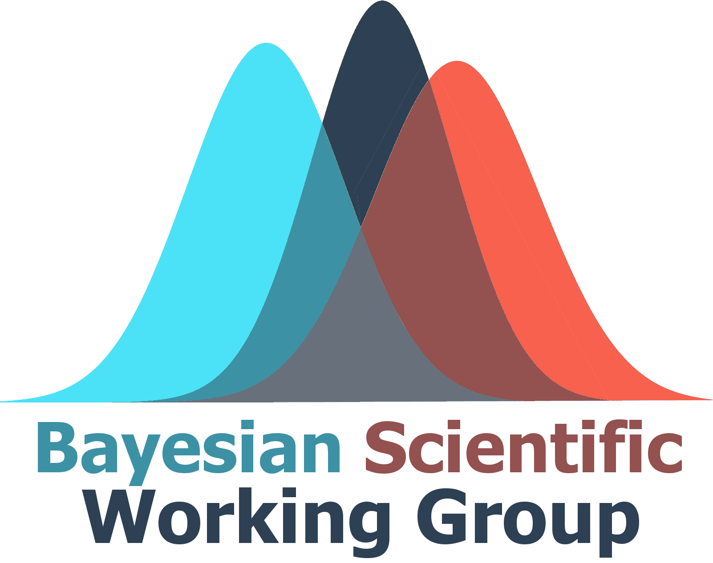

The Bayesian Scientific Working Group (BSWG) was formed in 2011 with the vision to ensure that Bayesian methods are well-understood and broadly utilized for design and analysis throughout the medical product development process and to improve industrial, regulatory and economic decision making. The group is comprised of individuals from academia, industry and regulatory authorities. As of 2025, we are officially affiliated with the American Statistical Association (ASA).
Current Officers
- Chair: Pritibha Singh
- Vice-Chair: Melissa Spann
- Advisors: Karen Price; Amy Xia; Fanni Natanegara; Freda Cooner
- Co-Secretaries: Spencer Woody; Hao Sun
- Next-Generation Officer: Jane Lin
- KOL Lecture Series Organizers: Haijun Ma; Mathangi Gopalakrishnan; Freda Cooner
- Publication Chair: (Position open)
- Webmaster: Melvin Munsaka; Spencer Woody; Haijun Ma